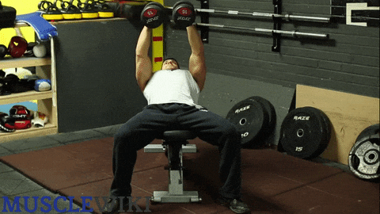
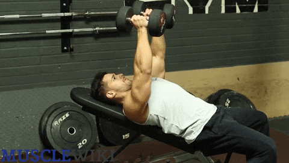
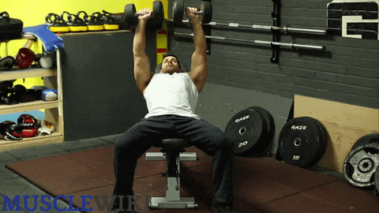
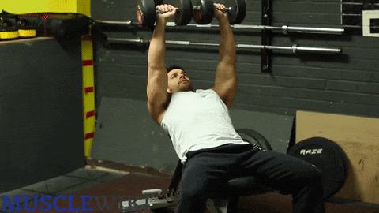
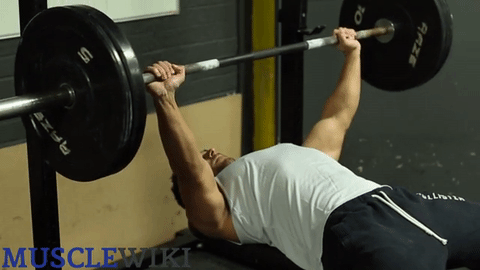
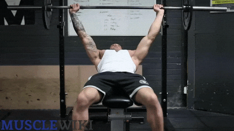
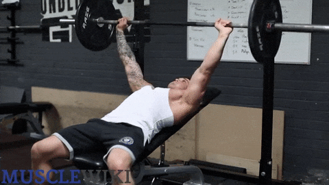

Chest
Push Up
Difficulty : Beginner


- Place your hands firmly on the ground, directly under shoulders.
- Flatten your back so your entire body is straight and slowly lower your body
- Draw shoulder blades back and down, keeping elbows tucked close to your body
- Exhale as you push back to the starting position.
Incline Push Ups
Difficulty : Beginner


- Stand facing bench or sturdy elevated platform.
- Place hands on edge of bench or platform, slightly wider than shoulder width.
- Slowly lower your body until your chest almost touches the bench.
- Push body up until arms are extended.
Dumbbells Incline Chest Flys
Difficulty : Beginner


- Lay flat on the bench and place your feet on the ground.
- Begin the exercise with the dumbbells held together above your chest, elbows slightly bent.
- Simultaneously lower the weights to either side.
- Pause when the weights are parallel to the bench, then raise your arms to the starting position.
Incline Dumbbells Bench Press
Difficulty : Beginner


- Raise the bench to a 30 - 45 degree angle
- Lay on the bench and set your feet on the ground.
- Raise the dumbbells with straight arms then slowly lower them to about shoulder width.
- Raise them again until your arms are locked and at the starting position again.
Barbell Bench Press
Difficulty : Intermediate


- Lay flat on the bench with your feet on the ground. With straight arms unrack the bar.
- Lower the bar to your mid chest
- Raise the bar until you've locked your elbows.
Incline Barbell Bench Press
Difficulty : Intermediate


- Position the bench between 30 and 45 degrees.
- Lay flat on the bench with your feet on the ground. With straight arms unrack the bar.
- Lower the bar to your mid chest
- Raise the bar (slowly and controlled) until you've locked your elbows.